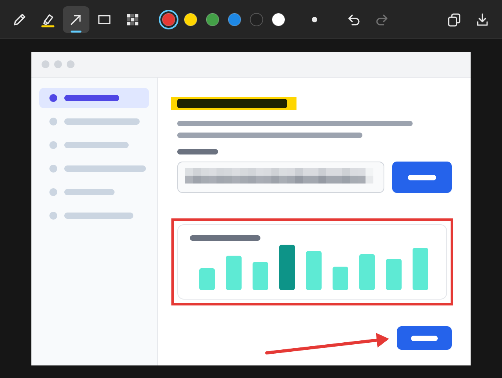

The screenshot you meant to take
Windows' Snipping Tool takes its time to open and has little to mark up with. Recorte is up before you've let go of the keys.
Same keys
Win+Shift+S freezes every monitor. Drag across what you want, and it's on the clipboard when you let go.
Mark it up
Pen, highlighter, arrow, box and blur, in six colours and three sizes, with undo. Each tool keeps its own colour.
Blur that hides
Big flat blocks over an email, a token or a name. Unlike a soft blur, they can't be sharpened back.
Pastes anywhere
On the clipboard as a bitmap and as a PNG, so Teams, Slack, Word, Paint and the browser all take it.
Or save it
Ctrl+S saves a PNG named by date and time, into Pictures\Screenshots unless you say otherwise.
Small
One app of under 1 MB with nothing else to install. Waiting in the tray it uses a few MB and no CPU.
The editor
Drawn by Recorte itself, in your taskbar's light or dark theme and your accent colour.

Keys
| Win+Shift+S | New snip. Also a left click on the tray icon. |
| Drag, Enter, Esc | Select a region; take the whole monitor; cancel. |
| P H A R B | Pen, highlighter, arrow, box, blur. |
| 1 to 6, [ ] | Colour; smaller and bigger. |
| Ctrl+Z, Ctrl+Y | Undo, redo. |
| Ctrl+C, Ctrl+S | Copy, save. |
| Ctrl+N, Esc | Another snip; close the editor. |
Any other hotkey, Ctrl+Shift+S or PrintScreen for example, is one line in the settings file, which the tray menu opens.
How it works
Windows keeps Win+Shift+S for itself, so an app can't register it the usual way. Recorte watches the keyboard with a low-level hook instead, sees the keys before the shell does, and takes them. Quit Recorte and Windows has its shortcut back.
The screen is captured once, before anything appears, so you select on a still picture: a menu or a tooltip stays in the shot. Each monitor gets its own overlay at its own scale, so a snip from a 4K screen keeps every pixel.
The overlay and the editor are drawn by Recorte itself, with no browser engine and no GPU, the same code on every system. Nothing you snip leaves your computer.
More small tray apps
 CafeKeeps your Mac or PC awake, from the tray.
CafeKeeps your Mac or PC awake, from the tray. CantosHot corners for Windows, macOS and Linux.
CantosHot corners for Windows, macOS and Linux. CotaYour Claude usage limits, in the tray.
CotaYour Claude usage limits, in the tray. LuzWarms your screen at night, like f.lux.
LuzWarms your screen at night, like f.lux. PortaWhat's listening on your ports, and a way to stop it.
PortaWhat's listening on your ports, and a way to stop it. SonusA volume slider for every app.
SonusA volume slider for every app. Sua VezLights up when your coding agent finishes or needs you.
Sua VezLights up when your coding agent finishes or needs you.